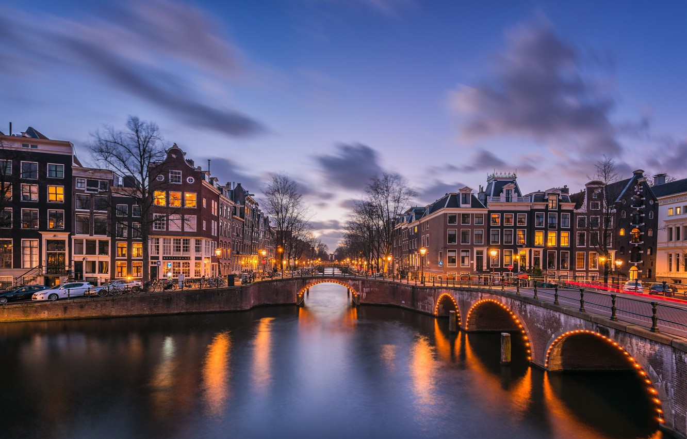

UTRECHT

This year, as the bike-friendly Dutch city celebrates its 900th anniversary
in style, explore its canal-side bars, farm-to-table restaurants and historical
sites, some dating back to the Roman Empire.
TOP THREE HISTORICAL ATTRACTIONS TO VISIT IN UTRECHT, THE NETHERLANDS
Utrecht is a city comfortable in its own skin.
Despite celebrating its 900th anniversary as a
city this year, the fourth-biggest Dutch centre
hasn’t turned its back on its small-town ways,
rooted in its past as a Roman outpost. Daily
activities still revolve around the medieval
centre, where bikes rattle on cobblestones
and the gentle flow of ancient canals sets the
rhythm for an unhurried pace of life.
The city has been hard at work in the lead up
to its birthday, and there’s much to celebrate. In
2020, it completed the high-profile restoration
of a major canal — a project almost two decades
in the making. Last year, two sites in the wider
Utrecht province were added to the UNESCO
World Heritage List. And in June, the citycentre ruins of the imperial palace, which burnt
down in the 13th century, were made accessible
to the public for the first time in decades.
But it’s not all about the past. One of the
country’s major university cities, Utrecht
buzzes with a youthful spirit thanks to its
healthy student population. And while a visit
here is likely to start at a cultural landmark, it
could end with an art-themed treasure hunt or
jazz show in a futuristic concert hall.
Morning
Be up before the city wakes to have
the Oudegracht to yourself. The
oldest of Utrecht’s two inner-city
canals is its main social artery, but in
the morning you can cycle along the
waterside streets uninterrupted,
admiring the gabled houses and
pausing to fuel up at retro coffee
shop Cafca. Afterwards, peruse
some of the Saturday markets.
The country’s largest and oldest
gathering of fabric vendors,
Lapjesmarkt has been a weekly
fixture for over 400 years. Only a
few streets away, you’ll find more
colour at the Flower Market on
Janskerkhof Square. Stop for lunch
at nearby Ruby Rose, a restaurant
set in a former flower shop, or try
Streetfood Club, next door, which
serves bites from around the world.
Afternoon
Walk off lunch on your way to
Domplein, a city square at the
heart of the city’s medieval centre.
To find it, look up and head for the
Domtoren: at 368ft, the country’s
highest church tower has served
as an urban compass for almost
700 years. Make your way up its
495 steps for sprawling views all
the way to Amsterdam, if the sky is
clear. Then, descend underground
for DOMunder, an immersive
archaeological site that takes you
through Domplein’s tumultuous
2,000-year history. The other
must-see in this square is gothic St
Martin’s Cathedral, which used to
be joined to the Domtoren until a
storm destroyed its nave in 1674
— don’t leave without taking a stroll
around its 15th-century courtyard.
Evening
While it’s only a 15-minute bike
ride from the centre, getting to
Stadsjochies feels like an escape to
the countryside. When this urban
farm opened a restaurant in 2021, it
designed a menu where the cress,
edible flowers and herbs grown on
site take centre stage. Arrive for
6pm for the full evening experience:
a tour of the grounds, from the
permafrost plot to the vertical
garden, followed by a multi-course
dinner in the greenhouse. If you’re
not ready to call it a night, head
back to the city centre to catch a
performance at TivoliVredenburg.
Built around the 1970s Symphony
Hall, this huge arts venue has five
halls, each designed for a different
music genre, and looks striking
when lit up after dark.